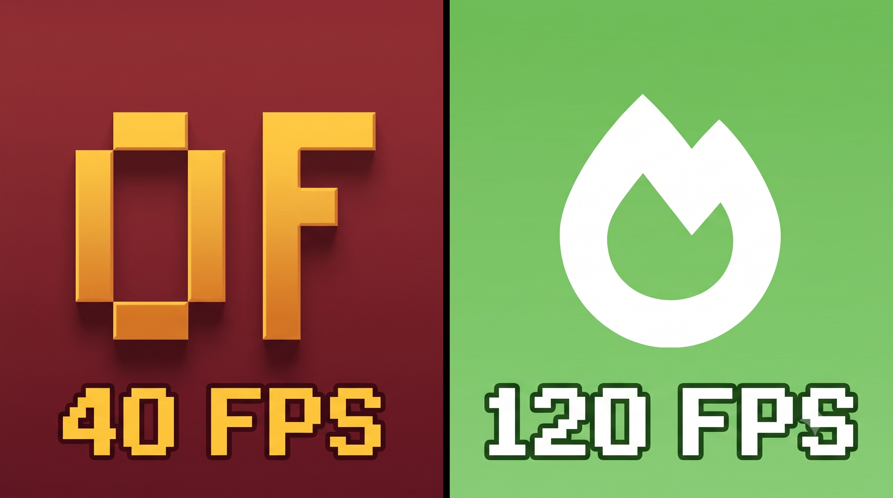

Sodium vs OptiFine en 2026: ¿Cuál da realmente más FPS?

El eterno debate ha terminado
Durante años, OptiFine fue el rey indiscutible de la optimización en Minecraft. Sin embargo, con las actualizaciones más recientes y los cambios en el motor del juego, ha surgido un nuevo campeón: Sodium.
¿Qué es OptiFine?
OptiFine no solo mejora los FPS, sino que añade características geniales como luces dinámicas, zoom y soporte para shaders (mediante OptiFine HD). Sin embargo, su código está cada vez más desactualizado frente a las versiones modernas (1.20+).
¿Qué es Sodium?
Sodium es un mod para Fabric diseñado exclusivamente para revolucionar el motor de renderizado de Minecraft. No tiene zoom ni luces dinámicas por defecto, pero puedes añadirle mods extras (como Iris Shaders y Zoomify) para tener lo mismo que OptiFine, ¡pero con el doble de FPS!
El Veredicto en 2026
Si tu PC es de bajos recursos o juegas en la versión más reciente, Sodium + Fabric es la opción indiscutible. En nuestras pruebas, equipos antiguos pasaron de 40 FPS con OptiFine a más de 120 FPS con Sodium. LFZ Launcher te permite instalar Fabric y descargar Sodium directamente desde la pestaña "Mods" con un solo clic.